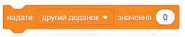
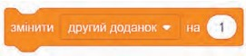
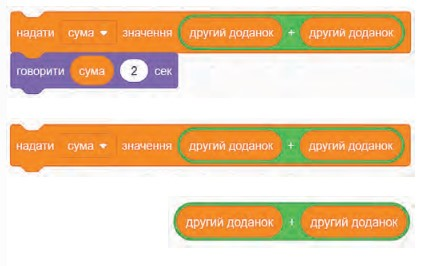

Щоб додати нове повідомлення, треба клікнути по маленькому трикутнику в цих командах і в списку, що розкривається, вибрати Нове повідомлення.
Після цього на екрані з’явиться діалогове вікно, до якого вводиться назва повідомлення.
Ключові поняття: Програма; Повідомлення; Змінна; Датчик; Оператори
Розділи:
Програма — це текст алгоритму розв’язування деякої задачі, записаний за правилами мови програмування.
Категорії блоків Scratch
Координати та напрямок
Поточні координати спрайта відображені в інформаційному вікні, яке розташоване під сценою над списком спрайтів
Повідомлення
Повідомлення — спосіб активації скриптів.
Щоб додати нове повідомлення, треба клікнути по маленькому трикутнику в цих командах і в списку, що розкривається, вибрати Нове повідомлення.
Після цього на екрані з’явиться діалогове вікно, до якого вводиться назва повідомлення.
Змінна — це величина, яка може набувати певних значень.
Ім’я змінної унікальне і постійне, а значення може змінюватися в процесі виконання алгоритму.
Команда Надати... значення... при кожному її виклику надаватиме змінній указаного значення
Команда Змінити... значення... при кожному її виклику змінюватиме вказане значення на...
Змінну потрібно вибрати зі списку або створити і відобразити на сцені значення змінної
Датчик — команда в Scratch, яка передає дані.
Команди данного блоку можуть використовуватися як числа і логічні значення. Датчик може отримувати інформацію не тільки від об’єкта, з яким він пов’язаний, але і від будь-якого об’єкта, що є в нашому проєкті.
Оператори дають змогу здійснювати логічні операції зі змінними (додавати, віднімати, множити, ділити та порівнювати значення змінних).
Подія (у середовищі Scratch) — натискання на клавішу, клацання клавішею миші на об’єкті (виконавцю або сцені), надходження повідомлення, зіткнення виконавців тощо.
При виконанні проєкту виконавці можуть реагувати на події — опрацьовувати події.
Команди, які призначено для відстежування моменту настання події, знаходяться в групах Події та Датчики.
Види подій реалізують шляхом запуску певних скриптів за умови появи події з використанням блоківзаголовків.
Після того, як визначено, на які події повинні реагувати виконавці, потрібно продумати алгоритми опрацювання подій — описи послідовностей дій.